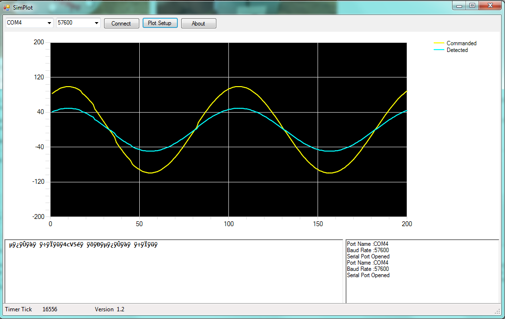
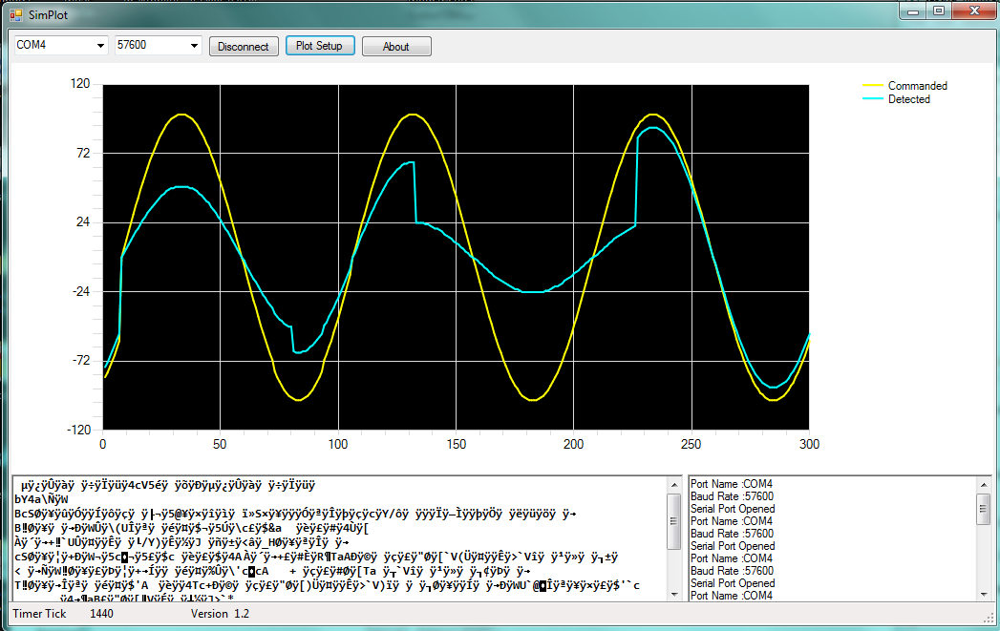
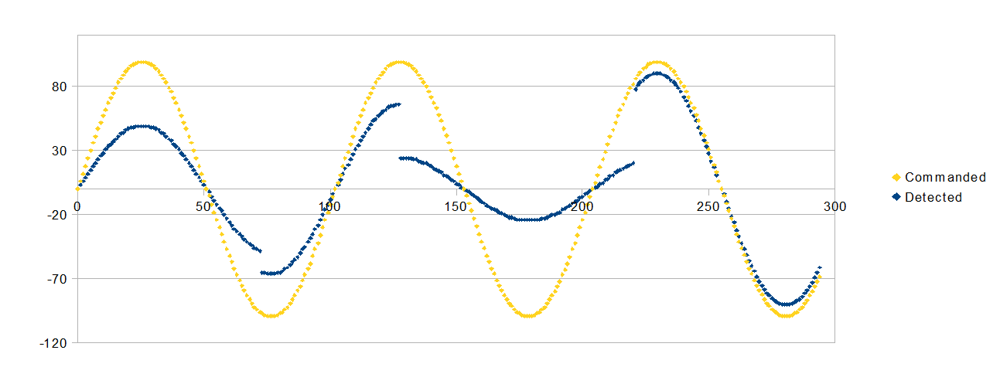

Walk Sensor Test Rig Development Log
Added by J. Simmons about 8 years ago
As part of the development of v0.3 of the Holoseat, we want to improve the sensitivity of the "walk sensor(s)". See Testing Hall Effect Sensors for more details.
I am planning to build a sensor test rig to simplify the testing procedure and eliminate variation in test results. This thread will serve as a live "lab notebook" documenting the design and development of the test rig. The actual test process (including selection of sensors and magnets to test) will be captured in Testing Hall Effect Sensors.
Below is the block diagram for the test rig. It will use a stand alone Arduino to control a rotation source (planning to use a re-purposed stepper motor as that source) to run a small wheel over a range of speeds and then plot the values calculated with the sensor/magnet under test to the driven speeds (in RPMs). Note, a bike computer with cadence measurement (not shown) will be used to verify the stepper motor is driving the wheel to the correct speed.
sensor_test_rig_block_diagram.png (120.5 kB)
{kind=link}
Replies (28)
RE: Walk Sensor Test Rig Development Log - Added by J. Simmons about 8 years ago
Bill of Materials
| Part # | Description | Vendor (linked) | Unit Cost ($) | Qty | Total Cost ($) |
|---|---|---|---|---|---|
| TR 01 | Bike Computer w/Cadence | Amazon | 36.34 | 1 | 36.34 |
| TR 02 | Arduino | re-purposed Duemilanove (owned) | 0.00 | 1 | 0.0 |
| TR 03 | Stepper Motor | re-purposed from Dayton Diode de-milled materials (owned) | 0.00 | 1 | 0.0 |
| TR 04 | Frame | re-purposed pine 2x2s and 2x4s, wood screws, and sheet metal found at Dayton Diode | 0.00 | ? | 0.0 |
| TR 05 | Spinning Plate (aka Wheel) | re-purposed pine plywood found at Dayton Diode | 0.00 | 1 | 0.0 |
| TR 06 | Metal Plate (part of set) | Amazon | 5.77 | 2 | 11.54 |
| TR 07 | Helping Hands | Amazon | 6.29 | 1 | 6.29 |
| -- | Misc Hardware | -- | 15.00 | 1 | 15.00 |
| Total | 69.17 |
RE: Walk Sensor Test Rig Development Log - Added by J. Simmons about 8 years ago
Some design notes...
- Need to test stepper motors before purchasing hardware
Need to de-mil v0.1 holoseat for Arduino- Need to test stepper motor library with Arduino
Need to confirm Dayton Diode free parts supplies have all of the found items not already acquired- Need to test plotting tools
RE: Walk Sensor Test Rig Development Log - Added by J. Simmons about 8 years ago
Testing Stepper Motors with Arduino¶
I found two stepper motors at Dayton Diode.
1. A four-wire stepper motor with SHP_35D1020 and 14970G. stamped on the side.
2. A five-wire stepper motor, labeled by hand as "48 steps". The wiring is broken in several places and will need to be resoldered if it is going to be used. >
>
After getting the motors photographed and documented, I googled for more detailed instructions on how to setup stepper motors with an Arduino. I found the following resources:
Somehow I missed the fact that I need a motor contoller in order to drive the stepper motor. I really cannot believe I missed this. I was clearly too focused on finding a library that would let me run the motor at a continuous fixed speed that I missed the whole need for a motor controller (it is doubly embarrassing because I would not have forgotten if I was thinking about working with servos like on RC airplanes). Doh!
The complete kit of components (less the Arduino and the bread board which I already have) are about $15. I think I will order those parts from Adafruit this weekend and work through their tutorial first, then consider repurposing the Dayton Diode stepper motors if the Adafruit one is not sufficient for my testing.
Live and learn...
While I was working on things, I de-milled the Holoseat v0.1 Arduino and uploaded Blink to it to confirm it was still in working order.
RE: Walk Sensor Test Rig Development Log - Added by J. Simmons about 8 years ago
Testing plotting tools¶
So, there are lots of build it yourself plotting tools for Arduino, but very little in the way of plug-n-play. And, since this is not the kind of project where I want to build generic software tools, I am really looking for something plug-n-plan. The only thing I found was Simplot. The good news is I think it will work. I was able to use the sample code from this forum post to send plotting data in real time to Simplot. And its controls are very straight forward. Take a look at the screenshot below to see how I adjusted it to zoom in on the region of the plot I cared about.

The settings for this screenshot are:
- Number of data points = 200
- Y Axis
- Minimum Value = -200
- Maximum Value = 200
- Channels
- Channel 1
- Enabled = checked
- Legend = Commanded
- Channel 2
- Enabled = unchecked
- Legend = Channel 2
- Channel 3
- Enabled = checked
- Legend = Detected
- Channel 4
- Enabled = unchecked
- Legend = Channel 4
- Channel 1
The only shortcoming of Simplot for my needs is no ability to save the values for use in other plotting tools so I can make permanent records of test results. So, I modified the sample source code to include a boolean switch to control whether the plot function sends Simplot or csv values. My thinking is that I will use Simplot to display real time visualization during development and the built in Serial Monitor to capture csv values during verification testing (copying and pasting them into a spreadsheet for plotting).
My next objective is to include a mock test in the sample code on the Arduino and run it in both modes (real time and not) making sure to produce a plot from the csv data.
simplot_demo.png (83.5 kB)
{kind=link}
RE: Walk Sensor Test Rig Development Log - Added by J. Simmons about 8 years ago
Tesing Plotting Tools Continued¶
Check it out. Here is a little demo that "commands" a test to run over the course of 30 seconds. The first image is a screen capture of the live recording from Simplot. Having the ability to see responses to test changes in real time was quite helpful when deciding how the test should work and if it was working.

The second image is a chart created in OpenOffice from the csv export of the test data after having re-run the test with the real time flag set to false.

Overall, I am quite happy with how the plotting tests turned out (though I clearly need to spend some time with the OpenOffice charts. At some point I learned enough to be able to get Excel to make the kind of plots I want, and that skill clearly did not directly translate to OpenOffice.
Note, I will commit my sample code after I make sure we have a proper tag for version 0.2 in the svn repo.
simplot_demo2.png (108.9 kB)
{kind=link}
csv_demo2.png (17.5 kB)
{kind=link}
RE: Walk Sensor Test Rig Development Log - Added by J. Simmons almost 8 years ago
When last we left off, I had inadvertently forgotten to include a motor controller for the test rig's stepper motor in my research notes. After pulling up a couple of tutorials, I elected to order the necessary parts for the Adafruit tutorial. Those parts came in this week, so tonight I am going to walk through that tutorial and, time permitting, try out the stepper motor library which supports open loop control (necessary for running at constant desired speed).
Here's what I got in the box:

- x2 Controller Chips (in case I fry one)
- Jumper wires
- Stepper motor
First step is to add the parts I already have to the parts I ordered and get everything ready for the tutorial.

Next step is the breadboard layout.

Now it is time to upload the demo source code and try it out. I also took this opportunity to update to the latest Arduino IDE (1.0.6).
Unfortunately, the first time I tried to run the demo code the stepper motor did not respond... Ha ha ha, scratch that, it did work, I just sent a very tiny increment (10 steps) and missed it moving. When I upped the number of steps to 512 (one complete revolution of this motor) it worked beautifully.
Which means it is time to test the open loop controller. The basic example code uses the setMaxSpeed() and setSpeed() methods. These take a single floating point number, the speed in steps/sec (that is stepper motor steps, not holoseat walking steps). For this stepper motor, 1 revolution = 512 steps. Therefore, to set the speed in RPM (or in holoseat walking steps) we need to use the following conversion example:
| 25 rev | 512 steps | 1 min | 213.33 steps |
| 1 min | 1 rev | 60 sec | 1 sec |
Giving a conversion factor of 8.533 steps/s / rpm. With a max speed of ~ 1000 steps/sec (according to the AccelStepper documentation), this gives a max simulated walking rate of 117 RPM. Considering the current default trigger walking rate is 75 rpm, this should be sufficient for our current testing.
So, I ran some initial tests with modified source code from the AccelStepper documentation to merge it with the Adafruit example so I could send a value from the Serial Monitor and have the Arduino adjust the speed. The good news is in general it worked. The bad news is speeds much above 50 RPM didn't work. So, I modified the code again to replicate the Adafruit example (using the move method, note you also have to call run each pass through the loop and it looks like it works better if you call moveTo(0) in the setup) so I could confirm what the step size was according to calls to the AccelStepper library. By running to various increments of 512 (512, 256, 128, etc) I confirmed the step size as seen by the AccelStepper library is 512 steps / revolution (so, I did not miss some configuration).
Going back to the run at constant speed test, some quick runs at 30 RPM with a timer confirm it needed 2 seconds to complete a revolution. 15 RPM yielded 4 sec to complete a revolution. So, it looks like there is just some limit (maybe in the processing power of this old arduino?) that prevents us from reaching much past 50 RPM (some quick testing says 54 RPM is the current limit). I will ponder these results and decide on the next step. This is probably enough speed for now. So I will plan to build a little frame and a disc or arm to mount to the stepper motor and then record some videos to show off the motor in operation (the movement is really too small to see in a video without the additional hardware).
RE: Walk Sensor Test Rig Development Log - Added by J. Simmons over 6 years ago
I have finally gotten back to working on the test rig (as part of PBI HW-08 in the first sprint of 2016) and I am happy to report significant progress. This week has seen the completion of the basic test rig (meaning we can claim done for HW-08) as shown in the image below.

The frame is just a quick assembly of 1x3 boards. Two 12 in long boards sit on top of two 6 in long boards, leaving enough of a gap to mount the stepper motor between the 12 in boards. The boards are attached to one another with 2-1/2 in #8 screws (one at each corner, pilot holes drilled first) and the motor is attached to one end of the frame by screwing into the 12 in boards with 1 in #6 screws (pilot holes drilled first).
Two 3D printed parts are used to form the rotating plate (now called the rotating arm). These parts are modeled in CadQuery (python source is in SVN repo, STL files are in DMSF). The base plate is placed on the stepper motor post first. Metal plates (from TR 06) are friction fit onto the posts of the rotating arm and then the rotating arm is placed on the stepper motor post.
The Arduino and the motor driver assembly (built on the bread board per AdaFruit tutorial referenced above) are just placed on the opposite end of the frame to keep them out of the way of the rotating arm. The helping hands (TR 01) completes the basic test rig configuration.
In the picture, the bike computer (TR 01) and its cadence sensor are placed in the helping hands to conduct verification testing (a demo video will be posted shortly). The verification tests were successful and also indicated there is a definitive upper limit to how fast the stepper motor (at least as currently configured) can move the rotating arm. With a single magnet on the rotating arm the stepper motor can run up to slightly more than 30 rpm. To expand the rpm range a second magnet was placed on the rotating arm (on the opposite side). In this configuration the maximum rpm as specified in the controller software was approximately 27 rpm (giving a cadence of 54 RPM).
The verification tests ran over a range of specified RPMs (15, 20, 25, 27) with anticipated cadences of (30, 40, 50, 54). These tests were repeated several times each and in all tests, the measured cadence was +/- 1 RPM of the anticipated values.
RE: Walk Sensor Test Rig Development Log - Added by J. Simmons over 6 years ago
Test Rig Verification Demo Video
RE: Walk Sensor Test Rig Development Log - Added by J. Simmons over 6 years ago
A few thoughts on what comes next.
- Earlier testing demonstrated capturing and displaying test results is complicated with the Arduino alone
- I have been learning and researching NodeBots and I like what I see (event based, web UI is baked in through Node.js, runs on a wide variety of platforms)
- Would like to make the test rig independent of my laptop
- Proposed test rig update - Run the test rig from a Raspberry Pi 2 Model B, connected to the Arduino
- RPi hosts NodeBots and provides test management and UI
- Arduino provides stepper motor control, accessed over serial line from RPi NodeBots code
- May revisit the Arduino code to see if we can get smooth transitions between speed settings
- Note, this will also allow us to test drive the concept of using something like a Pi Zero for the main board in the next revision of the holoseat
AdaFruit has an RPi 2 B starter kit for $100. It comes with
- RPi 2 B - need
- RPi 2 B case - nice to have
- Break out board for RPi - need
- Breadboard - nice to have
- M-M jumper wires - have
- USB to serial cable - nice to have (very)
- USB Wifi Module - need
- 4 GB SD Card - need
- 5V 2A power supply - need (might have something around that would work, but very nice to have the right thing)
- Random parts - have some, but still nice
I am not sure there is much (or any) cost savings, but the 1 button ordering makes this a win I think. Will order for the next sprint so we can be ready to finalize the test rig and actually run the tests.
RE: Walk Sensor Test Rig Development Log - Added by J. Simmons over 6 years ago
Have been unable to order the AdaFruit kit. Found a comparable SparkFun kit. A detailed review shows it has all the critical parts. And it is on sale for Pi Day.
RE: Walk Sensor Test Rig Development Log - Added by J. Simmons over 6 years ago
Alternate RPi kit ordered, so now it is time to finalize the experiment design so we know what to do when we get the last few bits of hardware. The experiment design should be driven by our design goals, so let's review those first.
Design goals
- Select new sensor/magnet pairing, such that we have a reliable signal over range of distances and "walking" speed (RPM)
- Determine max range for air gap distance to establish other design parameters
Note, early on, I also had in my scratch notes a requirement to determine what design variables had the most influence on our objectives, but I realized that is silly, because there are only two design variables (magnet selection and sensor selection) in this experiment so there is no reason to reduce the design space like this.
With these design goals in mind, here is an experiment goal with some more detail:
"Determine sensor/magnet pairing with least error in rpm (tightest grouping at the selected rpm) for range of distance (low, high) and range of rpms (low, high)".
This experiment definition does the following:
- Defines the objective - minimize the error in the rpm calculation
- Defines the operating conditions
- Distance range - for a to be determined low and high value
- RPM range - for a to be determined low and high value
I want to approach this experiment in phases, partly to familiarize myself with the tools (nodebots) and materials (hall effect sensors), but also to establish reasonable values for the low and high distance and RPM. Here are my proposed phases.
Phases
- Characterization - parametric studies to observe general behavior (plotting signal vs time for each test) of the system vs:
- Sensors - use mid-strength magnet, run test twice
- Magnets - determine sensor from study 1.1, run test twice
- Distances - sweep from default out doubling step size until signal is unreliable (select sensor and magnet based on study 1.1 and 1.3 - use smallest magnet and widest on signal sensor to ensure all test cases provide data; this establishes first cut at max range for air gap distance) run test until signal becomes unreliable
- DOE prep
- Use results from phase 1 to determine final list of sensors and magnets
- Build DOE table
- Sensors - should any of the sensors from Phase 1 be dropped?
- Magnets - should any of the magnets from Phase 1 be dropped?
- Replicates - determine how many times to repeat each test case to account for experimental error
- Select RPMs and distances
- Run DOE (4 times, once for LL, LH, HL, and HH of RPMs and distance)
- Write report
- For each RPM, plot RPM vs sensor/magnet pairing (all replicates and all distances) with horizontal line at the specified RPM
- Calculate error for each data set (X ordinate) in item 4.4, truth is specified rpm and report in a table
- Based on 4.1 and 4.2 recommend sensor/magnet pairing (looking for tightest grouping nearest to truth value, should be lowest error value)
- Re-run 1.3 for results of 4.3 at low and high rpm, calculating error value; end test when error is 1.5 times error reported 4.2
- Update report with results of phase 5.0
Needs for the experiments
- Characterization program - runs test case, sampling sensor every <insert time step>, collecting sensor value and time since test began; plot results after test is complete
- Test input = test definition (sensor, magnet, distance, rpm)
- Test output = plot
- DOE program - runs DOE test case, computing RPM on each event of the sensor, recording it
- Needs to compute RPM using similar algorithm from Holoseat
- Test input = test definition (sensor, magnet, distance, rpm)
- Test output = table of RPMs, average, error value, plots (as required)
Next step is to complete a couple of more tutorials for nodebots in prep for the hardware arrival.
RE: Walk Sensor Test Rig Development Log - Added by J. Simmons over 6 years ago
I am planning on running through a couple of tutorials on NodeBots and Node.js before coding up the experiment programs. Here are ones I am considering.
- https://www.dunebook.com/create-real-time-server-monitoring-app-with-angularjs-and-nodejs/ - has a nice set of demo plots
- Node School tutorials (link coming)
- ???
RE: Walk Sensor Test Rig Development Log - Added by J. Simmons over 6 years ago
So, it turns out I somehow managed to miss hitting the "Place Order" button on the alt RPi kit (wondered where it was...). Doh! In better news, the AdaFruit kit is back in stock, so I just actually ordered that one. ;)
RE: Walk Sensor Test Rig Development Log - Added by J. Simmons over 6 years ago
While working on the node school tutorials, I hit one snag (a javascript'ism that I was not very familiar with). I went looking for solutions to the problem and came across a couple of github repos with people's solutions. Here is one I liked in particular.
RE: Walk Sensor Test Rig Development Log - Added by J. Simmons over 6 years ago
Here are a couple of other useful links I have been referencing during this work.
- Node School Workshops
- Art of Node
- What is Version Contorl - nice review of some Git specific concepts that helped fill in some of the material in Node School
RE: Walk Sensor Test Rig Development Log - Added by J. Simmons over 6 years ago
I have completed what I feel is a sufficient number of nodeschool tutorials for now. Specifically, I have completed:
- javascripting
- git-it
- learnyounode
I am going to move on to https://www.dunebook.com/create-real-time-server-monitoring-app-with-angularjs-and-nodejs/ with the hope that I can morph this demo into what we need for the test harness.
RE: Walk Sensor Test Rig Development Log - Added by J. Simmons over 6 years ago
Setting up the Raspberry Pi to Run Node.js¶
Background¶
Recall that the test rig will be managed by programs running on a Raspberry Pi 2 Model B. We ordered the RPi as part of a kit from AdaFruit. The kit inclueded an assembled Pi Cobbler Plus which moves the RPi's pins to a breadboard. This will make setting up the connections to the sensors under test much easier.
Physical Setup¶
After getting the RPi, I placed it in the included case and connected the following cables:
- Power to the micro-USB
- USB keyboard and mouse to USB ports
- Monitor to the HDMI port
- Cobbler ribbon cable to the ribbon and the RPi GPIO pins (note the pin 1 position is on the far side from the USB ports, see below)
https://www.raspberrypi.org/documentation/usage/gpio-plus-and-raspi2/images/gpio-numbers-pi2.png
{kind=link}
OS Setup¶
Based on these reviews I elected to install Ubuntu Mate 16.04 LTS on the RPi using the following steps. Note, I decided to give dd Utility a try as my image copying tool.
- Download the RPi image
- Verify the RPi image
- Verify file size
- Verify the SHA256 Checksum
- Insert an 8GB or larger class 6 or 10 microSDHC card from the kit into the provided adapter and insert the adapter into the SD card slot on my computer
- Run dd utility and Restore the downloaded image to the SD card (note, I had to unzip the .xz file first using the gunzip utility on the command line, no aditional arguments required)
- Safely remove the microSDHC card from the computer and adapter then install in the Pi and boot the Pi
- Walk through the first boot setup wizard
- Expand the partition (if needed)
- Click the large Raspberry Pi Information button on the Welcome screen
- Click the Resize button
- Restart the Raspberry Pi
- Set a static IP address through the UI (System>Preferences>Internet and Network>Network Connections)
- Update apt-get sudo apt-get update
- Install ssh server sudo apt-get install openssh-server
Install Node.js¶
Based on this reddit post it is possible to install Node on an RPi 2 using the official instructions.
- Run curl -sL https://deb.nodesource.com/setup_6.x | sudo -E bash -
- Run sudo apt-get install -y nodejs
Note, the build tools (sudo apt-get install -y build-essential) were already installed.
Per Best Practices for Node.js Development, I ran the following commands.
- npm config set save=true
- npm config set save-exact=true
Ran the Express Hello World Example to test the install and everything performed correctly. Next up is getting NodeBots running and setting up a blinking LED.
RE: Walk Sensor Test Rig Development Log - Added by J. Simmons over 6 years ago
With the RPi set up to run Node.js, it is ready to install the required libraries to turn it into a NodeBots. This basically means using johnny-five in your Node.js app. For this project, I want to directly read values from the RPi's GPIO pins, so it also means using raspi-io in my Node.js apps. So, I created a new Node.js app and installed johnny-five and raspi-io using the following commands (based on the raspi-io wiki).
cd ~/Documentsmkdir node-testcd node-testnpm init --yes- edit package.json to include
"engines": { "node": "6.1.0" } npm install johnny-five- Note, this command listed errors that it recovered from by compiling a required library from sourcenpm install raspi-io- Note, this command listed errors that it recovered from by compiling a required library from source- Rebooted the computer, per instructions from the previous command
I then tested everything by running the demo program on the raspi-io wiki (shown below):
var raspi = require('raspi-io');
var five = require('johnny-five');
var board = new five.Board({
io: new raspi()
});
board.on('ready', function() {
// Create an Led on pin 7 on P1 (GPIO4)
// and strobe it on/off
var led = new five.Led();
led.strobe(500);
});
To do this, I used the following steps:
- Create index.js in my node-test app directory
- Copy and paste the source code above into index.js and save the file
- Run the command
sudo node index.js
When I ran this, I got several screens of warning messages followed by:
1463531222794 Device(s) RaspberryPi-IO 1463531222874 Connected RaspberryPi-IO 1463531222901 Repl Initialized >>
Once the Repl Initialized displayed, the Activity LED on the RPi board (a yellow LED next to the red Power LED) started to blink with a half second refresh rate. The LED stopped blinking when I quit the app by pressing Ctrl+C twice.
RE: Walk Sensor Test Rig Development Log - Added by J. Simmons over 6 years ago
The next test I want to run is to repeat the blinking LED, but on the breadboard so I can check out the Cobbler. Here is an up close image of the Cobbler connected to some buttons.

As you can see, the Cobbler just brings the Raspberry Pi pins out to the breadboard. So, all that should be needed is to wire up Pin 7 to an LED like this:

One final note, here is a wiki page from raspi-io covering how to address the RPi pins from Node.js.
RE: Walk Sensor Test Rig Development Log - Added by J. Simmons over 6 years ago
And it works (with one minor correction). The line which declares the LED (var led = new five.Led();) needed to be modified. It turns out the default constructor points to the ACT LED, which is not addressed the same as Pin 7. So, I changed the line to point to Pin 7 (aka GPIO4).
var led = new five.Led('GPIO4');
I will post a video later.
RE: Walk Sensor Test Rig Development Log - Added by J. Simmons over 6 years ago
So, with the overwhelming bulk of the toolchain working, I realized I wasn't sure which part of the project to work on next. So, I decided to try out a new bit of agile process and to break down the current PBI by starting with some user stories. I am not going to be rigorous with the format right now, I just want to get the idea across and practice going from user stories to tasks.
User Stories
- I want to store data
onlineso I can review test results. Notice how at first I assumed I wanted to store the data online, but later realized I just needed to store the data somewhere. - I want to collect data on timed events to support the characterization phase.
- I want to have a way to specify the test case so I can easily re-run the test case.
- I want to display the results of a test in both plots and tables (format and rendering engine are not important here).
- I want to control the stepper motor from the test program so everything is automatically coordinated during a test.
- I want to read values from a hall effect sensor so I can test the sensors we have.
So, with those user stories I generated the following tasks to break down the PBI.
Key- (User Story) [Priority] Task
- (3) [7] Write a formal test procedure to ensure the same steps are followed for each run of every test
- () [3]
Set up space for this code in the svn repo- there will be a series of node scripts in one app folder, one per test phase
- these scripts will run from the command line (the user stories do not require web interfaces)
- there will be a lib folder for common code I write
- will set up the package.json file and install required modules (johnny-five, raspi-io, etc)
- will set up appropriate svn ignores per node.js best practices
- (6) [4]
Demo reading values from hall effect sensor - (5) [1]
Demo node-serialport as interface to the Arduino controlling the stepper motor from node/johnny-five - (3) [6] Develop a test definition format
- (2) [5]
Demo timer functions - (1,4) [2]
Create or find a csv writer for node=> http://csv.adaltas.com/stringify/examples/
Finally, with all of this in hand, I was able to develop a concept for the test programs.
- Launch the test program from the command line, specifying a test definition file (.test) as an argument
- Test program reads the test definition then
- Sets output file name (<name of test file>_YYYYMMDD-HHMM.csv)
- Echos test definition
- Asks the user to verify the test is configured correctly
- Y/N?
- If Y, run the test, collecting the results in a 2D array | else abort the test
- When the test is complete, write out the results to the ssv file and exit
RE: Walk Sensor Test Rig Development Log - Added by J. Simmons over 6 years ago
So, the first thing to do on the task list is to demo "node-serialport"https://github.com/EmergingTechnologyAdvisors/node-serialport controlling the stepper motor through the Arduino sketch that is already written. The good news is that according to the docs the RPi version of this module is already installed since I have installed johnny-five and raspi-io.
That means I just need to demo the module. For that I need to know which port the Arduino gets mounted on and the baudrate I am using. There is a command line tool that comes with node-serialport called serialportlist that will come in handy for the first question (but you have to install node-serialport with the -g option, so I may need to install it after all). And for the second question, notes from earlier work with the Arduino sketch show it is set to use 57600 for the baud rate.
Steps for testing.
- Get the stepper motor elements of the test rig out and arrange things so the Arduino can be plugged into the RPi
- Boot up the RPi
- Start a terminal shell
- Run
serialportlist- the command was not found, so need to install it - cd to the node-test directory
- Install node-serialport with
sudo npm install -g serialport - Run
serialportlistto prove the serialportlist command is available - Plug in the Arduino
- Run
serialportlistto see if it picks up the Arduino - it detected the Arduino as /dev/ttyACM0
The rest of the testing involved some mucking around with both the Arduino firmware and the Node.js code to get things working. The gist of the things I had to do is:
- Update the firmware to emit a ready message when the setup() function was complete (see the note under write() for more details about why)
- Create a test script in Node.js (arduino.js) that connects to the Arduino over serial, waits for it to emit the ready message and then sends a value to tell the stepper motor to run at the specified speed (see following post for the source code)
- I also had to note that I needed to run arduino.js as root -
sudo node arduino.js - The final version of ardunio.js takes a parameter on the command line to specify the stepper motor speed
Once I take a video and post the source code for the test script, I think I can count this task as done.
RE: Walk Sensor Test Rig Development Log - Added by J. Simmons over 6 years ago
Source code for the test above: arduino.js.
var spm = process.argv[2];
var serialport = require('serialport');
var SerialPort = serialport.SerialPort;
var port = new SerialPort('/dev/ttyACM0', {
baudrate: 57600,
parser: serialport.parsers.readline('\n') });
port.on('data', function (data) {
console.log('Data: ' + data);
writeAndDrain(spm, function(err) {
if (err) {
return console.log('Error: ', err.message);
}
console.log('sent ' + spm + ' to Arduino');
process.exit();
});
});
function writeAndDrain (data, callback) {
port.write(data, function () {
port.drain(callback);
});
}
RE: Walk Sensor Test Rig Development Log - Added by J. Simmons over 6 years ago
Test Rig Integration Demo Video
RE: Walk Sensor Test Rig Development Log - Added by J. Simmons over 6 years ago
Today I am working on task 4 from my list of tasks for the test rig software: demo reading values from the hall effect sensors. I will be demoing reading one of the schmitt triggered sensors (these have different magnetic field levels for triggering on/off), so I will be treating the sensor as a digital input. We also have an analog sensor reporting the field strength on a relative scale. That sensor would be treated as an analog input.
Most of the work today is based on A Strange Attraction. Various Hall Effect Sensors. The wiring will be based on this diagram from that blog post.

Per the diagram above, the 5V+ line will be connected with a red wire, the ground with a black wire, and the digital out will be a green wire. Each jumper is connected to a matching alligator clipped line so the sensor can be remotely mounted. I will post a fritzing diagram as I get closer to writing the actual test scripts.
I am using TR 08 (the OH090U sensor, like in the blog post). I am using digitalRead to log the value from the hall effect sensor to the console. GPIO3 is not available for reading, so I set the input to be GPIO17 (the next I/O pin after GPIO4 from the LED blink test).
It worked like a charm. I get a stream of ones ('1') on the console while the magnet is far away and a stream of zeros ('0') when the magnet is close (the circuit is wired to be default closed). I stretched a little past the task requirement since things just worked by adding a timecode (number of seconds) to the console log messages. That was easy, so I also added in the timeout test to the same sample file, task 5. Now the test code reads values from the sensor, writes the values with a timestamp to the console, and exits after a specified period of time.
The code is commited to svn under the file test_rig/test-scripts/hall-read.js.